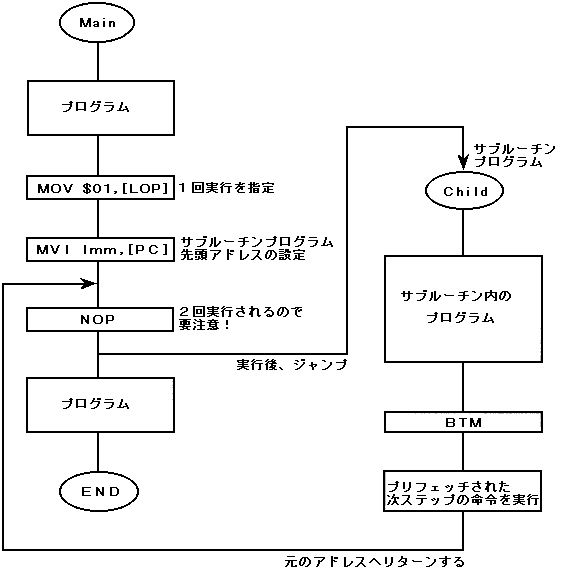

★HARDWARE Manual
★SCUユーザーズマニュアル
★HARDWARE Manual
★SCUユーザーズマニュアル
DSPは、以下に示す特殊処理を実行することができます。
MVI Imm,[RA0] ；外部メモリ転送開始アドレスのセット DMA D0,[PRG],SImm ；転送ワード数のセット、転送開始 MVI Imm,[PC] ；プログラム実行先頭アドレスのセット
MVI Imm,[LOP] ；繰り返し回数のセット LPS ；繰り返し実行指令 ### ；この命令が繰り返し実行される。
図4.4 サブルーチンプログラムの実行

★HARDWARE Manual
★SCUユーザーズマニュアル